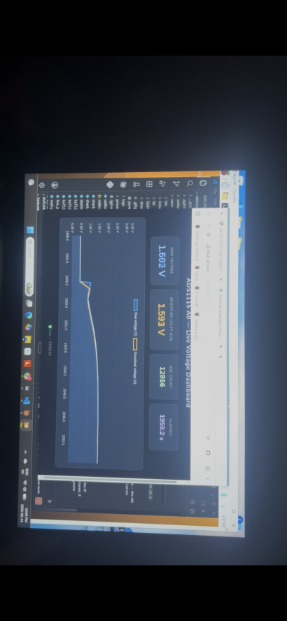

SPIFF Module · Axle-weight monitoring prototype
Real-time axle-load estimates and lift-axle control for a heavy truck.
A truck-mounted prototype that uses air-suspension pressure sensors to estimate axle loading, display live information to the driver, and support automated lift-axle control. It combines vehicle electronics, sensor acquisition, software, calibration, data logging, and a touchscreen interface — developed and tested on a commercial dump truck operating in Ontario.

- Status
- Functional prototype and field calibration
- My role
- System design, hardware integration, software architecture, testing, and documentation
- Platform
- Raspberry Pi · pressure transducers · ADS1115 ADCs · protected 12V power · relay control · touchscreen dashboard
- Period
- May 2026 – present
01The challenge
Weight you can’t see is weight you can’t manage.
Commercial dump trucks spread their load across several axles, and a driver has no direct read on how it sits. When the distribution is off, the consequences show up fast — and existing monitoring systems are often expensive, hard to repair, or limited in what they report.
Build a serviceable prototype that can measure suspension behaviour, estimate axle loading, show it clearly to the driver, and interact safely with the truck’s existing lift-axle system.
02How a lift axle works
Drop the lift axle, and the load has somewhere else to go.
A lift (pusher) axle is raised when the truck runs light and lowered under load, adding a contact point that carries part of the weight. SPIFF estimates each axle’s load and can automate that call. Drag the control below to lower the axle and watch the drive tandem fall back within its limit.
Illustrative axle loads — limits and distribution simplified to show the principle.
03The engineering approach
Four functions: measure, process, display, control.
{{ f.t }}
{{ f.sub }}
{{ fn.title }}
{{ fn.desc }}
04System overview
Four layers, from the suspension to the driver.
{{ l.name }}
- {{ it }}
05Key engineering challenges
A truck is not a laboratory.
{{ c.title }}
{{ c.desc }}
06Prototype hardware
Modular, replaceable subsystems.
The hardware was assembled from separate, replaceable boards rather than one permanent circuit — easier to troubleshoot, modify, and test as the system evolved.
Full wiring diagram
View full wiring diagram →
07Calibration & initial testing
Pressure tracks load — but not perfectly linearly.
Calibration compared suspension pressure against a certified truck scale. Three initial points confirmed that pressure rises predictably with load, while showing the relationship is not a straight line. More evenly distributed load points and repeat measurements are needed before the model can be trusted across the full range.
| Air pressure | Sensor voltage | Scale measurement |
|---|---|---|
| {{ row.psi }} | {{ row.v }} | {{ row.kg }} |
Both linear and quadratic models were evaluated. The quadratic follows the three points more closely, but three measurements cannot prove accuracy between or beyond them.
08Testing completed
Verified on the bench, then on the truck.
Bench testing
- ✓{{ t }}
Truck testing
- ✓{{ t }}

Current limitations
What the prototype does not yet prove.
{{ l.t }}
{{ l.d }}
Next steps
From integration to calibration and reliability.
- {{ s.n }}{{ s.t }}
Project outcome
A working foundation, with the next priority clearly defined.
The prototype showed that air-suspension pressure could be collected, processed, displayed, and compared with known truck-scale measurements using a custom hardware and software platform. It established protected vehicle power, modular sensor acquisition, live monitoring, local logging, a simulated development mode, isolated vehicle control, and a documented calibration workflow.
The project remains under development. The technical priority has shifted from basic system integration to calibration quality, environmental reliability, and safe vehicle-side validation — alongside a planned strain-gauge load-cell sensing method and a modular design to support different trucks.
← Back to portfolio